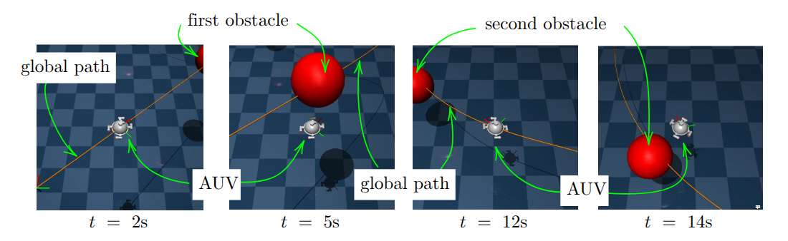

🏆 Abstract
This paper presents a comprehensive framework for glocal trajectory generation with real-time tracking control for a large group of Autonomous Underwater Vehicles (AUVs) equipped with distributed sensors. A two-stage approach is proposed to maximize the underwater area coverage of sensor systems while ensuring network connectivity between AUVs and free collision with terrains and floating obstacles. At the global level, a heuristic algorithm named Global Trajectory to Maximize Coverage (GT-MC), which optimizes the AUVs distribution, is introduced. At the local level, a safety-critical trajectory generation method is developed by using a Model Predictive Control (MPC) scheme for a virtual AUV system with Control Barrier Functions (CBF) as constraints for floating obstacle avoidance. The generated trajectories are tracked by the actual AUVs using a classical Sliding Mode Controller (SMC) combined with a thruster force allocation optimizer for the robustness. The complete framework is validated via simulation studies using an open-source advanced physics tool called MuJoCo. The suggested methodology can facilitate the autonomy, scalability, and safety of integrated-sensor AUVs distribution missions, making it a promising tool for intelligent marine sensing and monitoring.

🧠 Control Architecture
- MPC for optimal motion planning
- SMC for robust tracking in noisy environments
- CBF to ensure collision-free trajectories

🌊 Simulation Environment
- MuJoCo-based physics simulation
- Ocean current effects modeled
- Real-time 2D/3D visualization

👉 Results
2D Trajectory Tracking
3D Trajectory Tracking
Obstacle Attack Scenario